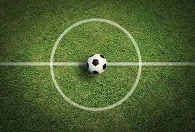

футбол
Футбол (от англ. foot — ступня, ball — мяч) — самый популярный командный вид спорта в мире, целью в котором является забить мяч в ворота соперника большее число раз, чем это сделает команда соперника в установленное время. Мяч в ворота можно забивать ногами или любыми другими частями тела (кроме рук). Футбольный матч состоит из двух таймов длительностью по 45 минут каждый. Между таймами предусмотрен 15 минутный перерыв на отдых, после которого команды меняются воротами. Это делается для того, чтобы команды были в равных условиях. Футбольную игру выигрывает команда, забившая большее количество голов в ворота соперника. Если команды закончили матч с одинаковым счетом голов, то фиксируется ничья, или назначаются два дополнительных тайма по 15 минут. Если дополнительное время закончилось ничьей, то назначается серия послематчевых пенальти. Стандартное поле для большого футбола представляет собой прямоугольную площадку, в которой линии ворот (лицевые линии) обязательно короче боковых линий. Размер футбольного поля в метрах четко не регламентирован, но есть определенные граничные показатели. Для проведения матчей национального уровня стандартная длина футбольного поля от ворот до ворот должна быть в пределах 90-120 метров, а ширина 45-90 метров. Для международных матчей длина боковых линий не должна выходить за пределы интервала 100-110 метров, а линий ворот за пределы 64-75 метров. Существуют рекомендованные FIFA габариты футбольного поля 105 на 68 метров. Разметку поля выполняют одинаковыми линиями, ширина разметки не должна превышать 12 сантиметров (линии входят в площади, которые они ограничивают). Боковую линию или край футбольного поля принято называть «бровкой».